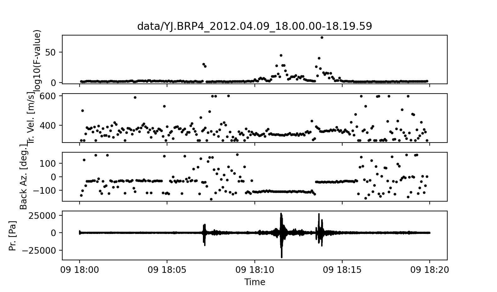
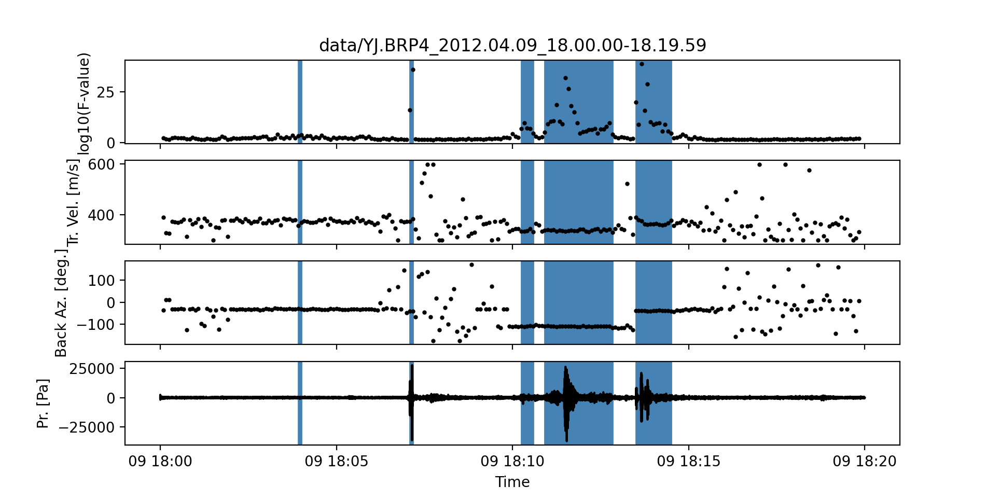
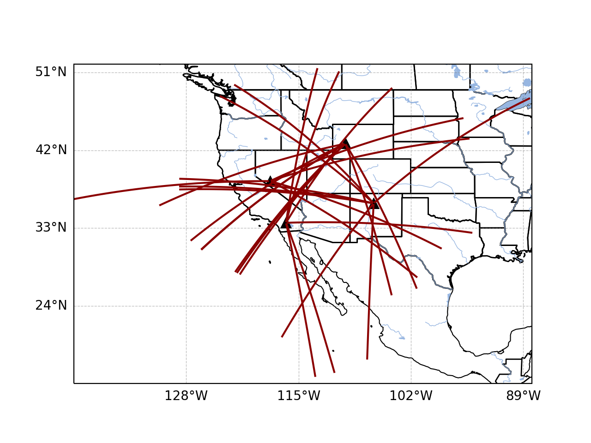
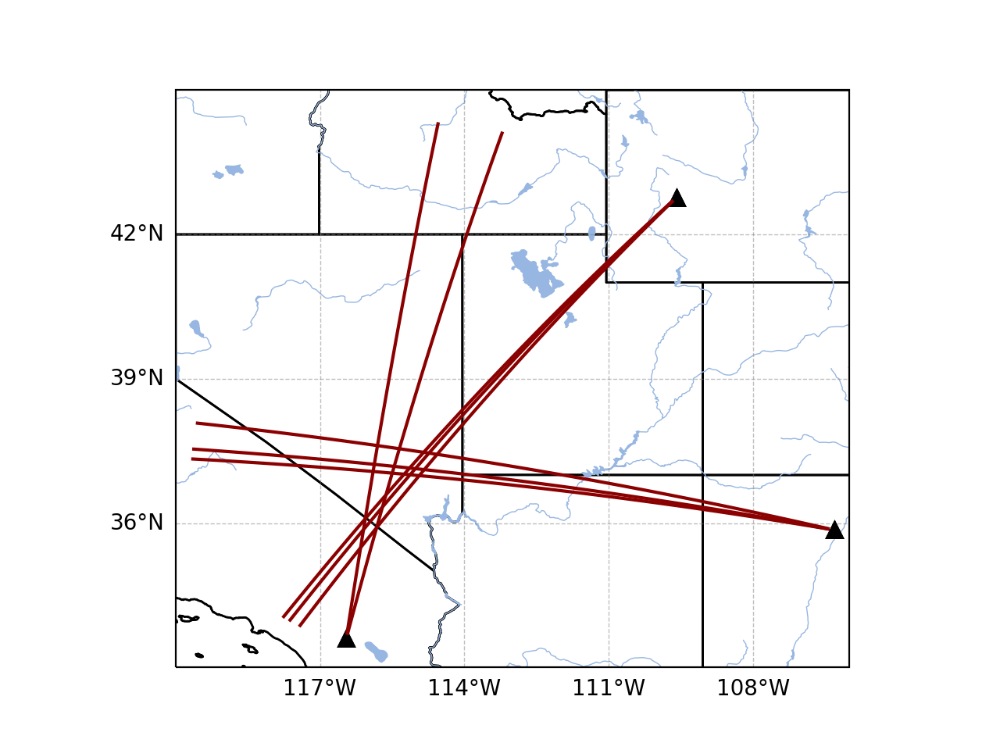
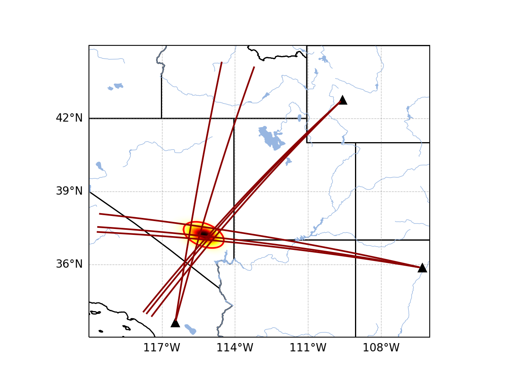
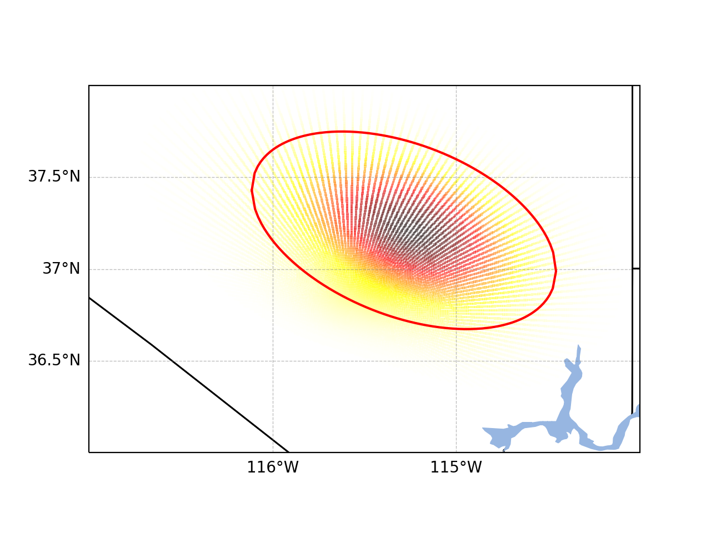
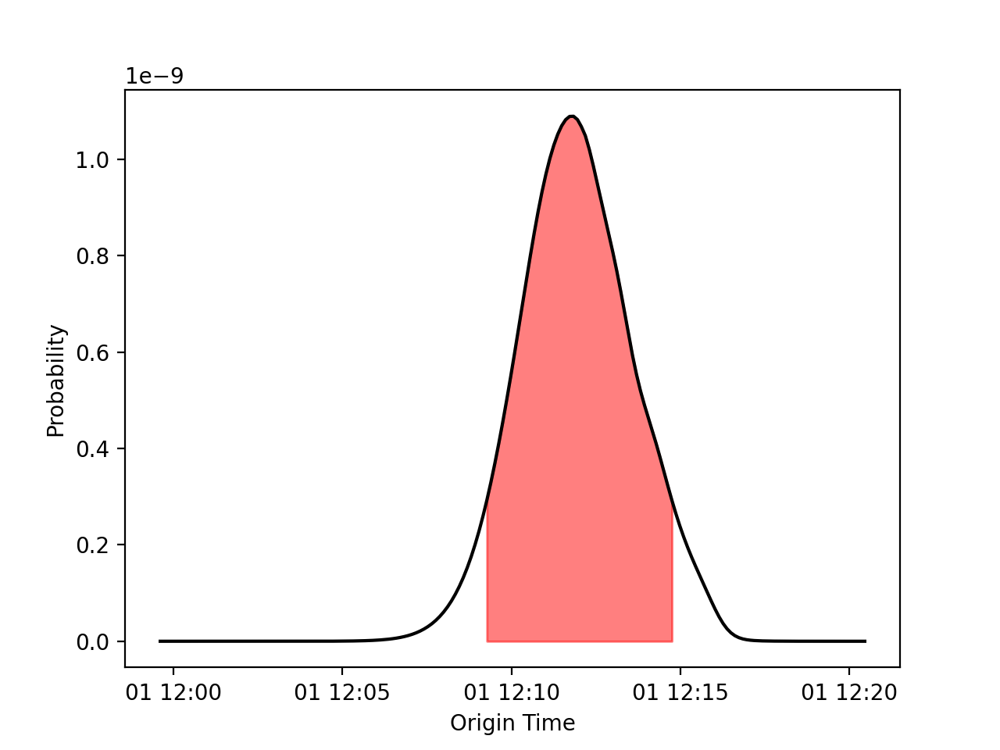

Quickstart¶
Command Line Interface (CLI)¶
Most of InfraPy’s analysis methods are accessible through a command line interface (CLI) with parameters specified either via command line flags or a configuation file. Waveform data can be ingested from local files (eg., SAC or similar format that can be ingested via obspy.core.read) or downloaded from FDSN clients via obspy.clients.fdsn. Array- and network-level analyses can be performed from the command line enabling a full pipeline of analysis from beamforming/detection to event identification and localization. Visualization methods are also included to quickly interrogate analysis results. The Quickstart summarized here steps through these various CLI methods and demonstrates the usage of InfraPy from the command line.
Array-Level Analyses¶
The beamforming methods in InfraPy can be run via the
run_fkCLI option. For a local data source such as the included SAC files in the data directory, this is simply,infrapy run_fk --local-wvfrms 'data/YJ.BRP*.SAC'Note that the data path must be in quotes in order to properly parsed and that this Quickstart assumes you are in the infrapy/examples directory (if you are getting an error that the waveform data isn’t found, make sure you’re in the correct directory). As the methods are run, data and algorithm parameters are summarized and a progress bar shows how much of the data has been analyzed:
##################################### ## ## ## InfraPy ## ## Beamforming (fk) Analysis ## ## ## ##################################### Data parameters: local_wvfrms: data/YJ.BRP*.SAC local_latlon: None local_fk_label: None Algorithm parameters: freq_min: 0.5 freq_max: 5.0 back_az_min: -180.0 back_az_max: 180.0 back_az_step: 2.0 trace_vel_min: 300.0 trace_vel_max: 600.0 trace_vel_step: 2.5 method: bartlett signal_start: None signal_end: None window_len: 10.0 sub_window_len: None window_step: 5.0 multithread: False Loading local data from data/YJ.BRP*.SAC Data summary: YJ.BRP1..EDF 2012-04-09T18:00:00.008300Z - 2012-04-09T18:19:59.998300Z YJ.BRP2..EDF 2012-04-09T18:00:00.008300Z - 2012-04-09T18:19:59.998300Z YJ.BRP3..EDF 2012-04-09T18:00:00.008300Z - 2012-04-09T18:19:59.998300Z YJ.BRP4..EDF 2012-04-09T18:00:00.008300Z - 2012-04-09T18:19:59.998300Z Running fk analysis... Progress: [>>>>>>>>>>>>>>>>>>>>>>>>>>>>>>>>>>>>>>>>>>>>>>>>>>] Writing results to specified output...Once completed, this analysis produces three output files:
YJ.BRP4_2012.04.09_18.00.00-18.19.59.fk_meta.txt |
Meta-data summarizing the fk calculations |
YJ.BRP4_2012.04.09_18.00.00-18.19.59.fk_times.npy |
Analysis window times |
YJ.BRP4_2012.04.09_18.00.00-18.19.59.fk_peaks.npy |
Peak info (Fisher stat, direction of arrival) |
The beamforming results from the
infrapy run_fkanalysis can be visualized using:infrapy plot_fk --local-wvfrms 'data/YJ.BRP*.SAC'The resulting plot of the included example data set is shown below for comparison:
The default beamforming parameters in
run_fkare useful, but in many cases the frequency band for a signal of interst or the window length appropriate for a given frequency band needs to be modified. From the command line, this can be done by specifying a number of options in the algorthm as summarized in the--helpinformation. For example, the analysis of data from BRP can be completed using a modified frequency band via:infrapy run_fk --local-wvfrms 'data/YJ.BRP*.SAC' --freq-min 1.0 --freq-max 8.0
The fk output files are automatically named from the data file (network and station codes plus start and end times), but a label can be specified as
--local-fk-label example.In the case that multiple analysis parameters are changed from their default values, a configuration file is useful to simplify running analysis and keep a record of what was used for future review of anlaysis. Create a text file called
BRP_analysis.configand enter the following:[WAVEFORM IO] local_wvfrms = data/YJ.BRP*.SAC [DETECTION IO] local_fk_label = data/BRP_analysis [FK] freq_min = 1.0 freq_max = 8.0 window_len = 5.0 window_step = 2.5 cpu_cnt = 8
Note that the parameter specifications use underscores in the config file and hyphens in the command line flags (e.g., –local-fk-label vs. local_fk_label). Adjust the CPU count value to whatever number of available threads you have on your machine. The analysis can now be completed by simply running:
infrapy run_fk --config-file BRP_analysis.config
When using a config file for analysis, any additional parameters set on the command line will overwrite the values from the config file. For example, to run the analysis with a maximum frequency of 10 Hz instead of 8 Hz, one can simply run:
infrapy run_fk --config-file BRP_analysis.config --freq-max 10.0If a parameter is not included in a config file or via the command line, a default value is used and can be found in the ouput at the time of the analysis or in the meta-data file.
From the beamforming results, detection analysis can be conducted via the
run_fdmethod. This analysis requires the fk output label and can use a custom detection label or automatically use the fk label if none is specified.infrapy run_fd --local-fk-label data/BRP_analysis
Similarly to the
run_fkmethods, parameter summaries are provided; however, because this anlaysis is relatively quick there is no progress bar:##################################### ## ## ## InfraPy ## ## Detection (fd) Analysis ## ## ## ##################################### Data parameters: local_fk_label: data/BRP_analysis local_detect_label: data/BRP_analysis Algorithm parameters: window_len: 3600.0 p_value: 0.99 min_duration: 10.0 back_az_width: 15.0 fixed_thresh: None return_thresh: False Running fd... Writing detections to data/BRP_analysis.dets.json
As noted in the output, a new file named
BRP_analysis.dets.jsonis created containing all of the detections identified in the fk results. This file contains the information summarizing each detection in a format that can be ingested for further CLI analysis and can also be loaded into the Infraview GUI. The first detection from this analysis of the included BRP data is shown below:[ { "Name": "", "Time (UTC)": "2012-04-09T18:10:17.008300", "F Stat.": 13.4034, "Trace Vel. (m/s)": 335.08, "Back Azimuth": -111.3, "Latitude": 39.4727, "Longitude": -110.741, "Elevation (m)": null, "Start": 0.0, "End": 15.0, "Freq Range": [ 1.0, 10.0 ], "Array Dim.": 4, "Method": "", "Event": "", "Note": "InfraPy CLI detection" }, ...Once detections are identified in the data record, they can be visualized similarly to the
plot_fkoption viaplot_fd.infrapy plot_fd --local-wvfrms 'data/YJ.BRP*.SAC' --freq-min 1.0 --freq-max 8.0
This plot has the same format as the above
plot_fkoutput, but now includes shaded boxes denoting where detections were identified in the analsysis. The frequency values specified here are applied as a bandpass filter on the waveform data in the visualization.In some cases, the parameters in the detection analysis are modified without changing the beamforming configuration and the
run_fdis useful in such scenarios. However, most of the time, the beamforming and detection analysis are run together. This can be accomplished in the InfraPy CLI via therun_fkdoption.infrapy run_fkd --config-file BRP_analysis.config
This option essentially combines the
run_fkandrun_fdoptions into a single analysis run.In addition to analysis of local data, InfraPy’s use of
obspy.clients.fdsnmethods enables analysis of data available on IRIS and similar FDSNs. Instead of specifying local waveform files, this requires defining the FDSN (e.g., IRIS, USGS) as well as the network, station, channel, and location information of the array. Lastly, the start and end time are also needed to identify the segment of data to download for analysis. This information can be entered on the command line, but it’s easier to simply write up a config file in most cases (recall that individual parameters can be overwritten on the command line, so the station or start/end times can be modified as needed). An example analysis from the IMS I53US array can be specified as:[WAVEFORM IO] fdsn = IRIS network = IM station = I53* location = * channel = *DF starttime = 2018-12-19T01:00:00 endtime = 2018-12-19T03:00:00 [DETECTION IO] local_fk_label = I53US_analysis local_detect_label = I53US_analysis
Although not yet included in the CLI methods, an FDSN station browser is available in the Infraview GUI to search for available data given a reference location, radius, and time bounds.
Analysis of data from a local database is also available through the InfraPy CLI, and is covered in a separate tutorial on Interfacing with Pisces.
{kind=link}
{kind=link}
Network-Level Analyses¶
Once fk and fd analysis are run and detections are identified across a network of infrasound arrays, event identification and localization can be completed. The detection set used in the Blom et al. (2020) evalution of a pair-based, joint-likelihood association algorithm are included as an example to demonstrate these analysis steps. Detection files are in the examples/data/Blom_etal_2020/ directory and contain detections on each of 4 regional array in the western US (see the manuscript for a full discussion of the generation of this synthetic data set). Analysis of these detections and identification of events can be completed by running:
infrapy run_assoc --local-detect-label 'data/Blom_etal2020_GJI/*' --local-event-label GJI_exampleNote that once again quotes are needed to define multiple files for ingestion. This analysis can be on the slow side, so it’s recommended to add on a
--cpu-cntoption and multithread the computation of the joint-likelihood values. The analysis results will be summarized to the screen,##################################### ## ## ## InfraPy ## ## Association Analysis ## ## ## ##################################### Data summary: local_detect_label: data/Blom_etal2020_GJI/* local_event_label: example starttime: None endtime: None Parameter summary: back_az_width: 10.0 range_max: 2000.0 resolution: 180 distance_matrix_max: 8.0 cluster_linkage: weighted cluster_threshold: 5.0 trimming_threshold: 3.8 Loading detections from files: data/Blom_etal2020_GJI/NVIAR.dets.json data/Blom_etal2020_GJI/I57US.dets.json data/Blom_etal2020_GJI/DLIAR.dets.json data/Blom_etal2020_GJI/PDIAR.dets.json Running event identification for: 2010-01-01T09:35:59.773Z - 2010-01-01T13:23:14.773Z Computing joint-likelihoods... Progress: [>>>>>>>>>>>>>>>>>>>>>>>>>>>>>>>>>>>>>>>>>>>>>>>>>>] Clustering detections into events... Trimming poor linkages and repeating clustering analysis... Running event identification for: 2010-01-01T10:51:44.773Z - 2010-01-01T14:38:59.773Z Computing joint-likelihoods... Progress: [>>>>>>>>>>>>>>>>>>>>>>>>>>>>>>>>>>>>>>>>>>>>>>>>>>] Clustering detections into events... Trimming poor linkages and repeating clustering analysis... Running event identification for: 2010-01-01T12:07:29.773Z - 2010-01-01T15:54:44.773Z Computing joint-likelihoods... Progress: [>>>>>>>>>>>>>>>>>>>>>>>>>>>>>>>>>>>>>>>>>>>>>>>>>>] Clustering detections into events... Trimming poor linkages and repeating clustering analysis... Running event identification for: 2010-01-01T13:23:14.773Z - 2010-01-01T17:10:29.773Z Computing joint-likelihoods... Progress: [>>>>>>>>>>>>>>>>>>>>>>>>>>>>>>>>>>>>>>>>>>>>>>>>>>] Clustering detections into events... Trimming poor linkages and repeating clustering analysis... Cleaning up and merging clusters...The analysis breaks the detection list into segments defined by the maximum propagation distance allows in order to avoid including detections in one analysis that will not be associated with others due to differences in detection times and typical infrasonic propagation velocities. For each event identified in the analysis, a new .dets.json file is written that includes the subset of the original detections that have been identified as originating from a common event. The naming convention of these files is
local_event_label_ev-#.dets.jsonand the example analysis here should have identified 3 events.Detection sets can be visualized on a map using the
plot_detsoption. This is useful in determining a useful maximum range for event identification and localization analysis. For the above analysis of the Blom et al. (2020) synthetic data set, the full data set can be visualized with,infrapy plot_dets --local-detect-label 'data/Blom_etal2020_GJI/*'This result is rather busy, but plotting each individual event’s detections shows that the association algorithm correctly identified the events,
infrapy plot_dets --local-detect-label 'GJI_example-ev0.dets.json' --range-max 1000
Once an event has been identified, the detections can be analyzed using the Bayesian Infrasonic Source Localization (BISL) methods as discussed in Blom et al (2015). This requires specifying the detection list file as well as an output location file label,
infrapy run_loc --local-detect-label GJI_example-ev0 --local-loc-label GJI_example-ev0
The analysis steps are udpated as localization is performed and the resulting location and origin time information is printed to screen as well as written into an output file (the output file for InfraPy’s localization is also a .json format file, but it’s naming convention uses “.loc.json” to distinguish it from a “.dets.json” detection file)
##################################### ## ## ## InfraPy ## ## Localization Analysis ## ## ## ##################################### Data summary: local_event_label: example1-ev0 local_loc_label: example1-ev0 Parameter summary: back_az_width: 10.0 range_max: 2000.0 resolution: 180 src_est: None pgm_file: None Loading detections from file: example1-ev0.dets.json Running Bayesian Infrasonic Source Localization (BISL) Analysis... Identifying integration region... Computing marginalized spatial PDF... Computing confidence ellipse parameters... Computing marginalized origin time PDF... BISL Summary: Maximum a posteriori analysis: Source location: 37.212, -115.283 Source time: 2010-01-01T12:11:16.645000 Source location analysis: Latitude (mean and standard deviation): 37.212 +/- 27.882 km. Longitude (mean and standard deviation): -115.283 +/- 34.18 km. Covariance: -0.41. Area of 95 confidence ellipse: 17938.387 square kilometers Source time analysis: Mean and standard deviation: 2010-01-01T12:11:55.838 +/- 100.512 second Exact 90% confidence bounds: [2010-01-01T12:09:12.885, 2010-01-01T12:14:46.185] Writing localization result into GJI_example-ev0.loc.jsonThe localization result can be visualized in a number of ways. Firstly, the detecting arrays and location estimate can be plotted on map using,
infrapy plot_loc --local-detect-label example1-ev0 --local-loc-label example1-ev0 --range-max 1200.0For Visualization of the source region in more detail, the
--zoomoption can be set to true and the map zooms in to show only the estimated source region.infrapy plot_loc --local-detect-label example1-ev0 --local-loc-label example1-ev0 --zoom trueLastly, the origin time is estimated as part of the BISL analysis and can be visualized as,
infrapy plot_origin_time --local-loc-label example1-ev0
{kind=link}
{kind=link}
{kind=link}
{kind=link}
{kind=link}
Scripting and Notebook-Based Analysis¶
In addition to the command line interace methods for infrapy, the analysis algorithms can be imported directly into user Python scripts or notebooks for custom applications. Example import and usage scripts are included in the examples/ directory and will be detailed below for this somewhat more advanced usage. The example scripts are summarized in the below table.
example_fkd.py |
Run beamforming and detection analysis on an Obspy stream |
example_assoc.py |
Run event identification methods on a list of detections |
example_bisl.py |
Run localization methods on a list of detections |
example_yield.py |
Run spectral yield estimation methods |
The beamforming and detection analysis can be imported from the
infrapy.detection.beamforming_newlibrary. Beamforming analysis includes setting up an ObsPy stream, converting it to an array data instance, and then scanning through with a defined analysis window.import numpy as np from obspy.core import read from infrapy.detection import beamforming_new if __name__ == '__main__': # ######################### # # Define Parameters # # ######################### # sac_glob = "data/*.SAC" freq_min, freq_max = 0.5, 2.5 fk_win_len, window_step = 10.0, 2.5 sig_start, sig_end = 600, 800 back_az_vals = np.arange(-180.0, 180.0, 2.0) trc_vel_vals = np.arange(300.0, 600.0, 2.5) # ######################### # # Run Methods # # ######################### # # Read data and convert to array format x, t, t0, geom = beamforming_new.stream_to_array_data(read(sac_glob)) M, N = x.shape # Define slowness and delays slowness = beamforming_new.build_slowness(back_az_vals, trc_vel_vals) delays = beamforming_new.compute_delays(geom, slowness) # Run beamforming in each window and find best beam info times, beam_results = [],[] for window_start in np.arange(sig_start, sig_end, window_step): if window_start + fk_win_len > sig_end: break X, S, f = beamforming_new.fft_array_data(x, t, window=[window_start, window_start + fk_win_len]) beam_power = beamforming_new.run(X, S, f, geom, delays, [freq_min, freq_max]) peaks = beamforming_new.find_peaks(beam_power, back_az_vals, trc_vel_vals) times = times + [[t0 + np.timedelta64(int(window_start), 's')]] beam_results = beam_results + [[peaks[0][0], peaks[0][1], peaks[0][2] / (1.0 - peaks[0][2]) * (x.shape[0] - 1)]] times = np.array(times)[:, 0] beam_results = np.array(beam_results)
Detection analysis is then completed by scanning back through the beamforming results and can be appended to the end of the above beamforming analysis as it requires the times and beam_results information computed there.
fd_win_len = 60 * 5 det_thresh = 0.99 min_seq = 5 back_az_lim = 10 TB_prod = (freq_max - freq_min) * fk_window_len dets = beamforming_new.detect_signals(times, beam_results, fd_win_len, TB_prod, M, min_seq=min_seq, back_az_lim=back_az_lim) for det in dets: print("Detection time:", det[0], '\t', "Rel. detection onset:", det[1], '\t',"Rel. detection end:", det[2], '\t',end=' ') print("Back azimuth:", np.round(det[3], 2), '\t', "Trace velocity:", np.round(det[4], 2), '\t', "F-stat:", np.round(det[5], 2), '\t', "Array dim:", M)
The association methods require ingesting a detection list and defining a clustering threshold for the hierarchical linkage cut off. The likelihood methods include a function to read in a .json format file as output in the CLI detection analysis.
from infrapy.association import hjl from infrapy.propagation import likelihoods as lklhds if __name__ == '__main__': det_list = lklhds.json_to_detection_list('data/example1.dets.json') clustering_threshold = 5.0 labels, dists = hjl.run(det_list, clustering_threshold) clusters, qualities = hjl.summarize_clusters(labels, dists) for n in range(len(clusters)): print("Cluster:", clusters[n], '\t', "Cluster Quality:", 10.0**(-qualities[n]))
Similar to the association methods, localization requires just a detection set from an event:
from infrapy.location import bisl from infrapy.propagation import likelihoods as lklhds if __name__ == '__main__': det_list = lklhds.json_to_detection_list('data/example2.dets.json') result,pdf = bisl.run(det_list) print(bisl.summarize(result))
Yield estimation analysis is not currently available through the CLI due to the more complicated nature of the ingested data (requiring waveform data across multiple detecting arrays as well as transmission loss models for the region). The example yield estimation provided shows how to set up the analysis and estimate yield for an above-ground explosion. Analysis parameters include the detection file for the event, waveform data location, and strings to ingest each array’s data.
from obspy.core import read import numpy as np import matplotlib.pyplot as plt from infrapy.propagation import likelihoods as lklhds from infrapy.propagation import infrasound from infrapy.characterization import spye if __name__ == '__main__': # ######################### # # Define Parameters # # ######################### # det_file = "data/HRR-5.dets.json" data_path = "../infrapy-data/hrr-5/" data_ids = ["W220/HR5.W220*.sac", "W240/HR5.W240*.sac", "W340/HR5.W340*.sac", "W420/HR5.W420*.sac", "W460/HR5.W460*.sac"]
The analysis parameters include a noise option (“pre” or “post” detection window), a window buffer factor that extends the sample window beyond the detection window, a source location, frequency band, yield range, and reference distance from the source at which to compute the source spectral estimate. If a ground truth yield is known it can be specified and the frequency-yield resolution of the grid can be specified.
ns_opt = "post" win_buffer = 0.2 src_loc = np.array([33.5377, -106.333961]) freq_band = np.array([0.25, 2.0]) yld_rng = np.array([1.0e3, 1000.0e3]) ref_rng = 1.0 grnd_truth=None resol = 200
The detection list and waveform files are ingested and spectral amplitudes are computed,
# ############################# # # Define the detections # # and spectra # # ############################# # det_list = lklhds.json_to_detection_list(det_file) st_list = [0] * len(det_list) for j in range(len(st_list)): st_list[j] = read(data_path + data_ids[j] ) smn_specs = spye.extract_spectra(det_list, st_list, win_buffer=win_buffer, ns_opt=ns_opt)
The tranmission loss model models are defined and loaded,
. # ######################### # # Load TLoss Models # # ######################### # tloss_f_min, tloss_f_max, tloss_f_cnt = 0.025, 2.5, 25 models = [0] * 2 models[0] = list(np.logspace(np.log10(tloss_f_min), np.log10(tloss_f_max), tloss_f_cnt)) models[1] = [0] * tloss_f_cnt for n in range(tloss_f_cnt): models[1][n] = infrasound.TLossModel() models[1][n].load("../infrapy/propagation/priors/tloss/2007_08-" + "%.3f" % models[0][n] + "Hz.pri")
Finally, analysis can be performed, and results printed and visualized,
# ######################## # # Run Yield # # Estimation Methods # # ######################## # yld_vals, yld_pdf, conf_bnds = spye.run(det_list, smn_specs, src_loc, freq_band, models, yld_rng=yld_rng, ref_src_rng=ref_rng, resol=resol) print('\nResults:') print('\t' + "Maximum a Posteriori Yield:", yld_vals[np.argmax(yld_pdf)]) print('\t' + "68% Confidence Bounds:", conf_bnds[0]) print('\t' + "95% Confidence Bounds:", conf_bnds[1]) plt.semilogx(yld_vals, yld_pdf) plt.fill_between(yld_vals, yld_pdf, where=np.logical_and(conf_bnds[0][0] <= yld_vals, yld_vals <= conf_bnds[0][1]), color='g', alpha=0.25) plt.fill_between(yld_vals, yld_pdf, where=np.logical_and(conf_bnds[1][0] <= yld_vals, yld_vals <= conf_bnds[1][1]), color='g', alpha=0.25) plt.show(block=False) plt.pause(5.0) plt.close()